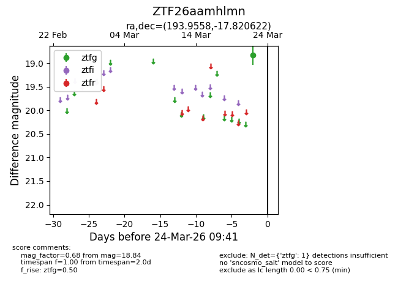
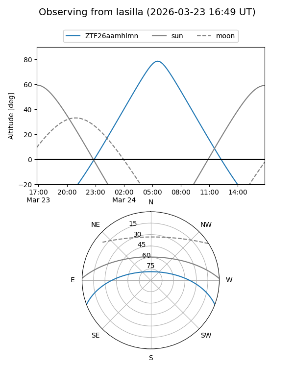
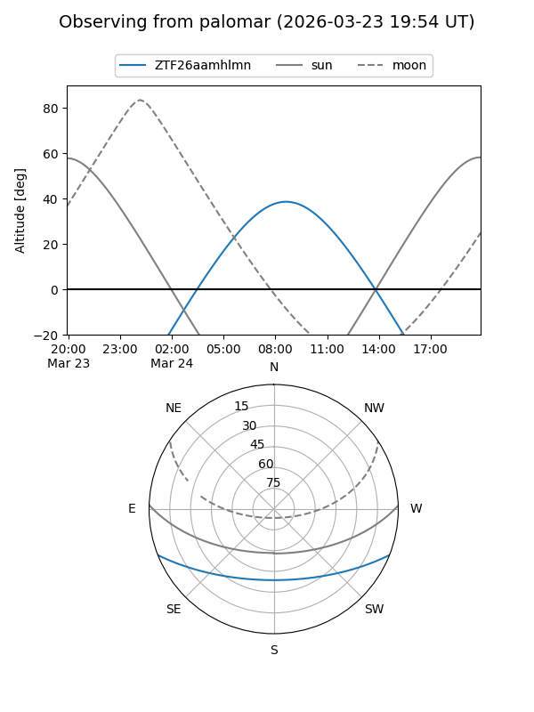

ZTF26aamhlmn
Target ZTF26aamhlmn at 2026-03-24 09:43
Aliases and brokers:
FINK: link
Lasair: link
ALeRCE: link
alt names
ZTF26aamhlmn (ztf,fink_ztf)
Coordinates:
equatorial (ra, dec) = 193.9558,-17.82062
equatorial (HMS+DMS) = 12:55:49.40,-17:49:14.24
galactic (l, b) = (304.4091,+45.03855)
Flags:
Photometry:
last ztfg=18.84
1 ztfg detections
Lightcurve

Visibility


Additional plots